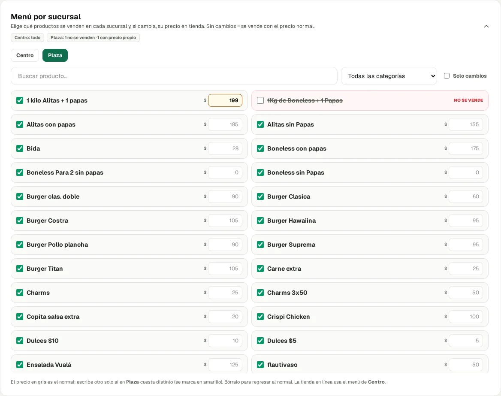

Menú por sucursal (plan Pro)
En Catálogo aparece este cuadro nuevo, solo si tienes 2 o más sucursales. Viene cerrado; arriba dice el resumen de cada sucursal.
- Palomita = se vende en esa sucursal. Si la quitas, la fila se pone en rojo con «No se vende», y ese producto ya no sale en la caja de esa sucursal.
- Precio: en gris está el precio normal. Si escribes otro, queda como el precio propio de esa sucursal y se marca en amarillo. Si lo borras, regresa al precio normal.
- Tiene buscador, filtro por categoría y la opción «Solo cambios», para ver nada más lo que es distinto.
- En el Punto de Venta de cada sucursal solo salen sus productos, con su precio; el ticket y el corte salen igual.
- La tienda en línea usa el menú de la sucursal principal. Si un producto se apaga ahí, no pierde su foto.
- Los precios de apps (DiDi, Uber, Rappi) siguen siendo los mismos en todas las sucursales.
Ejemplo de la captura (datos de La Salita con 2 sucursales de prueba «Centro» y «Plaza», sin guardar nada):
| Centro | Plaza | |
|---|---|---|
| 1 kilo Alitas + 1 papas | $0 (normal) | $199 propio |
| 1Kg de Boneless + 1 Papas | se vende | no se vende |
